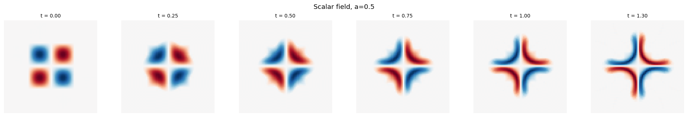
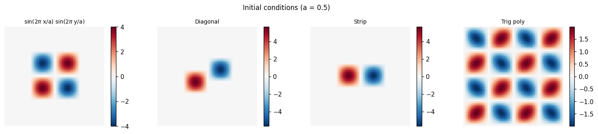
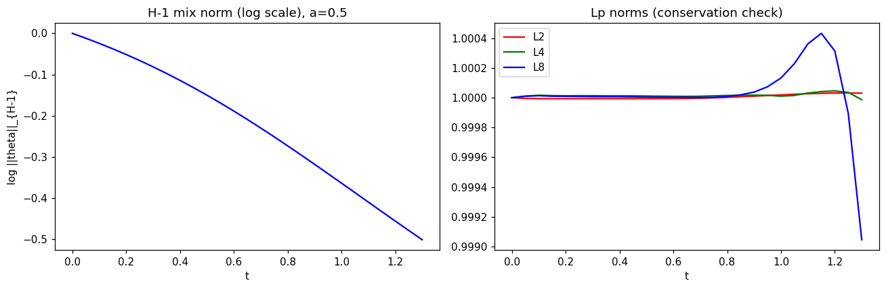
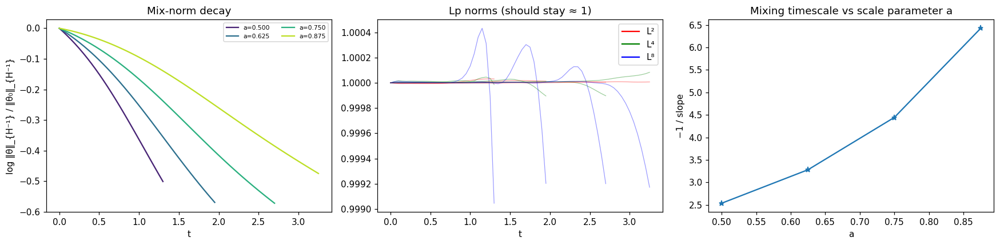
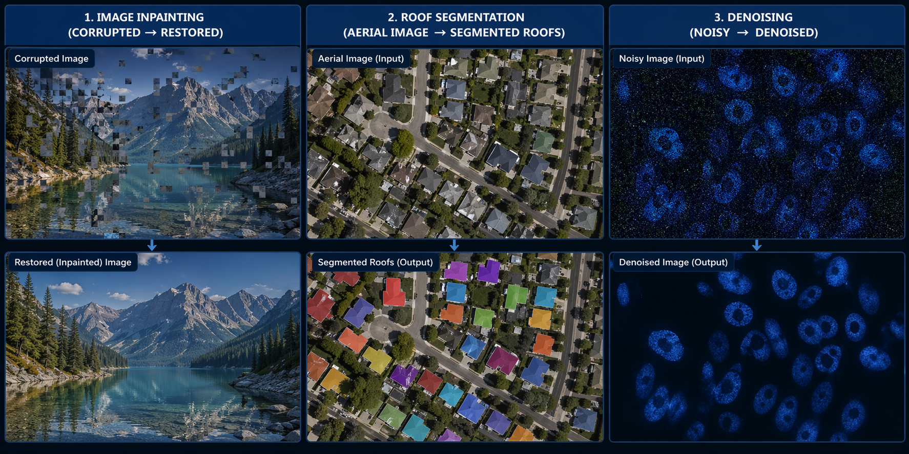
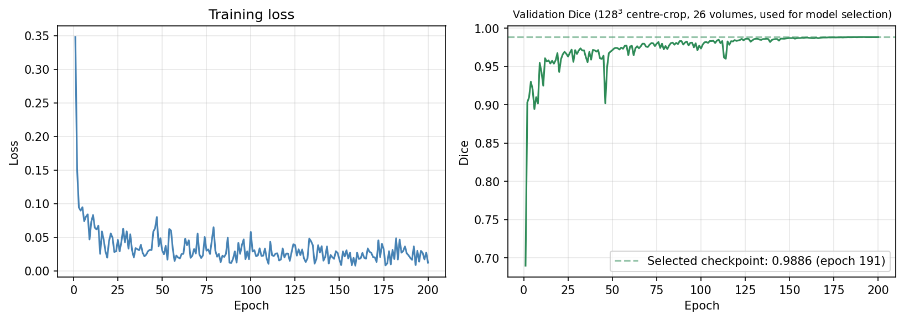
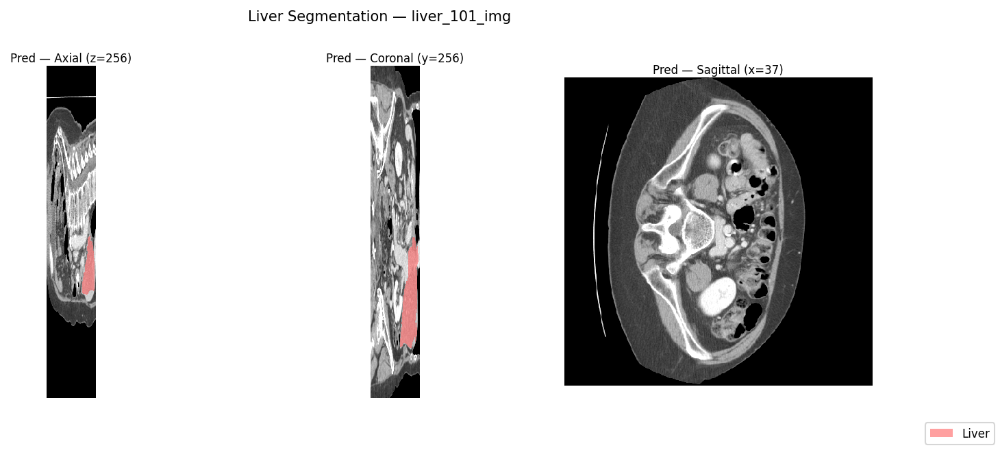

About
I am a mathematical engineer turned scientific ML practitioner, drawn to problems where rigorous theory and production-grade engineering meet.
My academic path began with a BSc in Mathematics from Obafemi Awolowo University, Nigeria, before I pursued an MSc in Mathematical Engineering at the University of L'Aquila, Italy. My thesis derived analytical lower bounds on the mix norm of passive scalars under enstrophy-constrained incompressible flows, drawing together variational methods, functional inequalities, and pseudo-spectral simulation in Python.
That foundation continues to shape how I build software. Across roles at Intuos Srl, N-and Italia Srl, Bridgestone EMIA, and Fellowship.AI, I have developed machine learning systems spanning aviation telemetry, predictive failure modelling, geometric algorithms, and GAN-based image synthesis. In parallel, I have designed end-to-end LLM systems — among them a Medical RAG Assistant, an Enterprise NL-to-SQL pipeline, and Llama models fine-tuned with LoRA and QLoRA.
I am currently seeking research and engineering roles at the intersection of scientific machine learning, medical imaging, and production AI systems.
Education
- Thesis: Lower Bounds on the Mix Norm of Passive Scalars Advected by Incompressible Enstrophy-Constrained Flows
- Coursework: PDEs, Functional Analysis, Numerical Analysis, Finite Element Methods, Scientific Computing, Dynamical Systems, Optimization, ML, Fluid Dynamics
- Thesis: Application of Galerkin Finite Element Method to the One-Dimensional Stefan Problem
- MTN Foundation Scholarship · PTDF Scholarship · Murli T. Chellaram Foundation Scholarship
Experience
- Telemetry-based ML classifiers (Random Forest and LGBM) for real-time flight phase identification
- FFT-based signal processing pipelines for aircraft engine RPM estimation and anomaly detection
- REST APIs and automated telemetry data processing pipelines
- Dashboards for operational monitoring and flight performance analysis
- Predictive ML models for vending machine delivery failure forecasting
- Large-scale operational dataset analysis — transaction and telemetry logs across 150+ machines
- KPI dashboards tracking user behaviour metrics and machine reliability statistics
- Statistical analysis of system performance and operational anomalies
- SQL query optimisation and reporting workflow automation for business intelligence systems
- Improved database performance and automated reporting pipelines
- Improved efficiency of
deepcopyonGeometryMaphalf-edge data structures used in tire cross-section FEA meshing pipelines - Developed geometric algorithms for cubic Bézier curve closest-point computation using scalar minimization
- Deep learning research on convolutional networks and Generative Adversarial Networks (GANs)
- Implemented InsetGAN architecture for whole-body human image generation, deployed via FastAPI to a Swift iOS app
Selected Projects
Optimal Mixing of Passive Scalars
Master's thesis: Python pseudo-spectral simulation of the Lin–Thiffeault–Doering optimal mixing velocity for passive scalars on the 2-torus. Implements RK45 time integration, Leray projection, H⁻¹ mix norm analysis, and power-law scaling of mixing timescale vs support parameter a.
INTUOS Flight Data Monitoring Dashboard
Full-stack aviation safety analytics platform built for Intuos Srl. FastAPI + IBM DB2 backend with a React/Vite frontend. Visualises real-time telemetry, flight phase classifications, and engine performance metrics.
Aircraft Engine RPM via Audio DSP
↗Real-time engine health monitoring on Raspberry Pi. Extracts RPM and operational status from microphone audio using FFT; transmits over UART to an ESP32 controller. Validated against a Tecnam P92 / Rotax 912 engine.
Vending Machine Failure Prediction
↗Telemetry and transaction log analysis across 150+ vending machines. Predictive ML models for delivery failure forecasting by identifying pre-failure event sequences across machine states.
LLM Engineering Portfolio
↗End-to-end AI systems: Medical RAG Assistant, Enterprise NL-to-SQL engine, Financial Sentiment Distillation (FinBERT compressed 62%), LoRA/QLoRA fine-tuning, and LLM evaluation with LangSmith.
Image Inpainting — TV Regularization
↗TV-regularized Douglas–Rachford optimization for variational image restoration. Applies functional analysis and convex optimization to reconstruct damaged images.
Image Denoising — ResNet
↗ResNet with Residual Channel Attention Blocks (RCAB) and Squeeze-and-Excitation for grayscale image denoising. Blind denoising with random σ, SSIM+L1 loss, achieving ~26–28 dB PSNR on LFW.
Roof Segmentation — U-Net
↗U-Net architectures for aerial image segmentation using convolutional feature extraction and data augmentation. Trained for rooftop detection from satellite imagery.
Multi-Label Image Classification
↗Multi-label classification on Pascal VOC 2012 (20 classes) using EfficientNet-B3 with mixed-precision training, OneCycleLR scheduling, and mAP evaluation.
Dipole Subsurface Scattering — Fitzpatrick Skin Types
Differentiable PyTorch implementation of the Donner & Jensen 2005 multi-layer dipole BSSRDF, parameterised with optical coefficients for all six Fitzpatrick skin types. Adding-doubling multi-layer recurrence; all parameters log-space learnable for gradient-based skin reconstruction.
NeRF vs TensoRF — Neural Radiance Fields
Vanilla NeRF and TensoRF (VM decomposition, Chen et al. 2022) from scratch. TensoRF achieves 17.2 dB PSNR (+3 dB over NeRF) with half the training iterations. MPS-safe gather-based interpolation for Apple Silicon.
Differentiable PBR — Inverse Material Optimisation
Pure-PyTorch differentiable renderer recovering spatially-varying Cook-Torrance material maps (albedo, normal, roughness, metallic) from multi-view images via gradient descent. GGX NDF, Schlick Fresnel, Smith G — no nvdiffrast dependency.
3D Liver Segmentation — Abdominal CT
3D U-Net trained end-to-end on MSD Task03 liver CT volumes (131 cases). Foreground-biased patch sampling, combined soft-Dice + BCE loss, cosine LR annealing, and Gaussian sliding-window inference. Best val Dice 0.9886, HD95 ≤1 mm after 200 epochs on Kaggle T4.
Research Results









Skills
Scientific Computing
Machine Learning
Differentiable Rendering
Generative AI & LLMs
Data & Analytics
Engineering & Cloud
Contact
Open to ML/AI engineering and research roles — particularly in scientific ML, LLM systems, and production AI. Based in L'Aquila, Italy; available remotely.